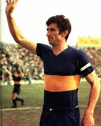
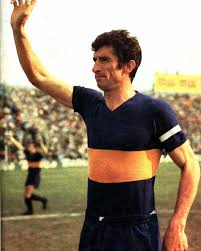

Estadio "La Bombonera" Alberto J. Armando
Capacidad: 54.000 espectadores
Inauguración: 25 de mayo de 1940
Títulos totales: 74 títulos oficiales.
Títulos nacionales: 35 títulos (35 Ligas Argentinas, 4 Copas Argentinas).
Títulos internacionales: 22 títulos (6 Copa Libertadores, 4 Recopas Sudamericanas, 3 Intercontinentales, entre otros).
Copa Libertadores 1977
Copa Libertadores 1978
 Copa Libertadores 2000
Copa Libertadores 2001
Copa Libertadores 2003
Copa Libertadores 2007
Copa Libertadores 2000
Copa Libertadores 2001
Copa Libertadores 2003
Copa Libertadores 2007
Cantidad de hinchas: Más de 16 millones de hinchas en Argentina.
Cantidad de socios: Más de 300.000 socios activos (2023).
 JUAN ROMAN RIQUELME
Diego Armando Maradona

Ubaldo Antonio Rattin
Martin Palermo
Carlos Tevez
JUAN ROMAN RIQUELME
Diego Armando Maradona

Ubaldo Antonio Rattin
Martin Palermo
Carlos Tevez
Rival: Boca Juniors, en el superclásico del fútbol argentino.

Capacidad: 54.000 espectadores
Inauguración: 25 de mayo de 1940